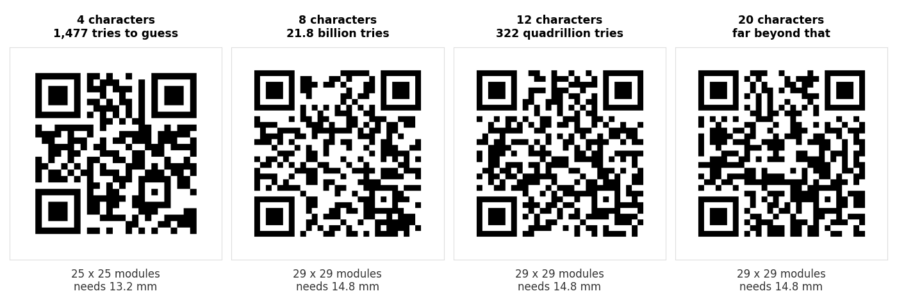

A normal QR code generator takes one thing you type and turns it into one code. Print that code a thousand times and you have a thousand identical codes that all do the same job, which is exactly what you want on a menu card or a shop window.
A random QR code generator solves a different problem. It produces a batch where every single code carries a different, unpredictable value. That difference is what lets you tell one printed code from another, and it is the whole reason event tickets, discount vouchers and warranty labels work.
What a random QR code generator is
A random QR code generator is a tool that produces a set of QR codes where each one holds a different randomly chosen value.
The first thing to clear up is what the word random refers to, because the name misleads people. It is not the pattern of black and white squares that is random. That pattern is fully determined by the QR standard: feed the same text into any two generators and you get the same arrangement of modules, every time. There is no randomness in the drawing.
What is random is the data going in. Instead of encoding https://example.com/menu a thousand times, the tool encodes:
https://example.com/v/EGxtNYQx
https://example.com/v/pzCAHvba
https://example.com/v/GG24dtiQ
and so on for as many codes as you asked for. Each code now points somewhere slightly different. Your system knows which token belongs to which ticket, voucher or product, so scanning a code identifies that specific one.
A random code is only half a system. The code carries an identifier and nothing else. The value lives in whatever you have on the other end that looks the token up, marks it as used, and refuses it the second time. Without that, you have printed a thousand pretty squares.
How a random QR code generator works
There are four steps, and only the last one has anything to do with QR codes at all.
1. It draws a random value
The tool asks a random number source for some unpredictable bits. This is the step that decides whether the whole thing is sound, and it is the step nobody looks at.
In a browser there are two sources. Math.random() is the familiar one, and browser documentation states plainly that it does not provide cryptographically secure numbers and should not be used for anything security related. Its output comes from a fast algorithm designed to look random for games and animations, not to resist someone working out what comes next. The other is crypto.getRandomValues(), which is built for exactly this purpose.
For a raffle among friends, either is fine. For anything worth money, the difference matters, because an attacker who can predict the sequence does not need to guess codes one at a time. They can generate the rest of your batch.
2. It turns the value into a token
Raw random bits are not printable, so they are mapped onto an alphabet. The common choice is the 62 characters a to z, A to Z and 0 to 9, which packs just under 6 bits into every character. Some tools drop the letters that look alike, such as O, 0, I and l, which costs a little density and saves a lot of confusion if anyone ever has to read a code out loud.
The result is a short string like EGxtNYQx. This is the token, and its length is the single most important decision in the whole process. We measure why below.
3. It attaches the token to something
A bare token on its own is just text. Scanning it shows the characters and nothing happens, because there is nowhere for the phone to go. So most tools put the token on the end of a web address you control:
https://yoursite.com/v/EGxtNYQx
Now a scan opens a page, your server reads the token, and you can do something useful: show the ticket holder's seat, apply a discount, mark the voucher as redeemed. A bare token is still the right answer for an inventory label that gets scanned by your own warehouse app, where the app already knows what to do with it.
4. It encodes the string as a QR code
This last step is completely ordinary. The string goes through the same encoder that handles a website link, a phone number or a WiFi password. There is no special random mode in the QR standard, and a code holding a random token is not different in any way from a code holding anything else of the same length.
Which is worth stating clearly, because it is the reason you can check the output with any scanner and the reason nothing about random codes makes them harder to scan.
How long the random part has to be
Two different things go wrong when the token is too short, and they go wrong at different sizes.
Collisions: two codes come out the same
Pick random tokens often enough and eventually you pick the same one twice. Two vouchers with the same code means one customer redeems the other's. The chance is far higher than intuition suggests, and it climbs with the square of the batch size.
Here is the probability that a batch contains at least one duplicate, using the 62 character alphabet:
| Codes in the batch | 4 chars | 6 chars | 8 chars | 10 chars | 12 chars |
|---|---|---|---|---|---|
| 1,000 | 3.3% | 1 in 114,000 | 1 in 430 million | negligible | negligible |
| 10,000 | 97% | 1 in 1,100 | 1 in 4.3 million | negligible | negligible |
| 100,000 | certain | 8.4% | 1 in 44,000 | 1 in 170 million | negligible |
| 1,000,000 | certain | certain | 1 in 430 | 1 in 1.7 million | negligible |
Look at the four character column. At ten thousand codes a duplicate is not a risk, it is close to a certainty. Four characters of base 62 gives 14.8 million possible values, which sounds like plenty until you remember that every code has to differ from every other code, not just from one of them.
Guessing: someone works out a live code
The second problem only matters when the code is worth something. If a discount voucher is a short random string, what stops a person typing addresses until one works?
With ten thousand codes issued, here is roughly how many attempts it takes before hitting a live one:
| Token length | Entropy | Attempts to hit a live code |
|---|---|---|
| 4 characters | 23.8 bits | about 1,477 |
| 6 characters | 35.7 bits | about 5.7 million |
| 8 characters | 47.6 bits | about 21.8 billion |
| 10 characters | 59.5 bits | about 83.9 trillion |
| 12 characters | 71.5 bits | about 322 quadrillion |
1,477 attempts is not an attack, it is an afternoon with a basic script. Four characters protects nothing. At eight characters the number is already large enough that a casual attempt is hopeless, and at twelve it stops being worth anyone's time.
What we measured: length is free
Here is the part that changes what you should actually do. We took a normal address, https://example.com/v/, appended random tokens of increasing length, encoded each one at error correction level M, and measured the grid it produced. Then we decoded every code back to confirm it matched.

| Token length | Full address | Grid | Smallest usable print |
|---|---|---|---|
| 1 to 4 characters | 23 to 26 chars | 25 x 25 | 13.2 mm |
| 5 to 20 characters | 27 to 42 chars | 29 x 29 | 14.8 mm |
| 21 characters and up | 43 chars and up | 33 x 33 | 16.4 mm |
Every one of those decoded correctly when we scanned it back.
A token of 5 characters and a token of 20 characters produce the identical code size. QR codes grow in fixed steps rather than character by character, so once you are inside a step, extra characters cost nothing at all. Going from 8 to 12 characters multiplies the work of guessing a live code by about fifteen million, and adds zero millimetres to what you print.
So use 10 to 12 characters. There is no tradeoff to weigh here, which is unusual. The only reason short tokens exist is that someone assumed shorter meant smaller, and on a QR code that assumption is wrong most of the time.
One caveat worth knowing. The step boundaries move with the length of the rest of the address. On a short domain such as https://qr.to/ the first step runs all the way to 12 characters, and the second to 28. The principle holds either way: find your step and use the whole of it.
Common uses for random QR codes
Event tickets and passes
The most common use by far. Each ticket carries a unique token, the scanner at the door checks it against the guest list, and the system refuses it on the second scan. Without randomness, one photographed ticket admits everybody who saw the photo.
Discount vouchers and promo codes
Single use codes for a campaign. Random tokens stop the code being shared on a deals forum and redeemed ten thousand times, which is precisely what happens to predictable ones. This is a case where the guessing table above matters directly, because there is money on the other side.
Raffles, prize draws and competitions
Each entry form or product label carries one code. Someone scans it to enter, and you can see which codes have been used without collecting anything personal at the point of entry.
Product authenticity labels
A unique code inside the packaging that a buyer scans to confirm the item is genuine. The value comes entirely from the code being unguessable. A counterfeiter who can work out valid codes can print them on the fakes, which is why this is the use case that most deserves 12 characters.
Inventory, asset and equipment tags
Every laptop, tool or shelf gets its own code. Here the codes do not need to resist attack at all, since nobody gains anything from guessing your shelf numbers. They only need to be unique, so collision resistance is the only column that matters and eight characters is plenty.
Attendance, check in and access
Unique codes handed to staff, students or delegates, scanned at the door. Random tokens stop one person's code being copied and reused, provided your system actually logs the scans.
Testing and quality control
A quieter use, but a real one. If you are building anything that reads QR codes, you need batches of varied codes to test with. Random data gives you the range of lengths and densities that real use will produce, rather than the one tidy code you have been testing against all week.
When random is the wrong choice
Random codes carry real costs, and plenty of jobs do not need them.
If every code does the same thing, do not make them different. A menu, a WiFi code, a review link, a contact card. One code, printed as many times as you like. Making a thousand different codes for a thousand table cards gives you a thousand things to track and nothing in return.
If you have nothing on the other end, random codes do nothing. This is the most common mistake. A unique code only has meaning if a system somewhere can look it up and record that it was used. Random tokens pointing at a page that treats everyone identically are just a longer link.
If the codes are not worth anything, do not over engineer. Shelf labels do not need cryptographic randomness. A simple numbered sequence is easier to read out loud, easier to sort, and easier to debug when one goes missing.
And a reminder that applies to all of these: a printed code cannot be changed. Whatever the token points at needs to keep working for as long as the print exists, which is the argument for pointing them at a path on a domain you own. Our guide to static and dynamic codes covers that tradeoff properly.
Making a batch yourself
Our bulk QR code generator takes a list, one item per line, and gives you every code back as SVG, PNG or a printable PDF sheet. It does not invent the random tokens for you, so you generate those wherever you keep your data, in a spreadsheet, a script or your own system, and paste the finished list in.
That order is deliberate rather than a limitation. The tokens have to exist in your records before they exist on paper, because a code you cannot look up is worthless. Generating them in your own system first is what guarantees that.
Two practical notes from our guide to what goes wrong in a batch of 500. Put a label before a vertical bar on each line so the downloaded files are named, otherwise fifty printed codes are indistinguishable once cut. And check a sample from the middle of the batch, not just the first one, because that is where mistakes hide.
Common questions
Is the QR pattern itself random?
No. The arrangement of squares follows the QR standard exactly and is the same in every generator for the same input. The randomness is entirely in the data you encode.
How long should the random part be?
Ten to twelve characters for anything of value, eight if the codes are only internal. Since a token anywhere from five to twenty characters produces an identical sized code on a normal domain, there is no reason to be stingy.
Can two random QR codes come out the same?
Yes, and the chance depends entirely on length. Four characters across ten thousand codes gives roughly a 97% chance of a duplicate somewhere in the batch. Eight characters brings that to about one in four million.
Can a random QR code be guessed?
A short one, easily. With ten thousand codes live, a four character token falls in about 1,477 attempts. Twelve characters takes around 322 quadrillion, which ends the conversation.
Do random QR codes expire?
The code does not. It is a printed pattern holding a token, with no account behind it. What expires is whatever your system decides: you can mark a token as used, refuse it after a date, or keep it valid forever. That control sits with you, not with the code.
Can I track which codes were scanned?
Yes, and this is the main practical advantage over a single shared code. Because each token is different, your normal analytics or your own database can tell you exactly which ones were used and when. A single code printed a thousand times can never tell you that.
Are random QR codes harder to scan?
No. The token is a few more characters, and within a size step those characters are free. Where a longer token does push the code into the next step, it grows by about 1.6 mm, which is not something a phone camera notices. Our guide to why QR codes fail to scan covers what actually causes failures, and token length is nowhere near the list.
What size should I print them?
A random token on a normal domain needs at least 14.8 mm, and that is a floor rather than a target. For a ticket or a voucher in the hand, 20 to 25 mm is comfortable. The sign size guide has the numbers for larger formats.